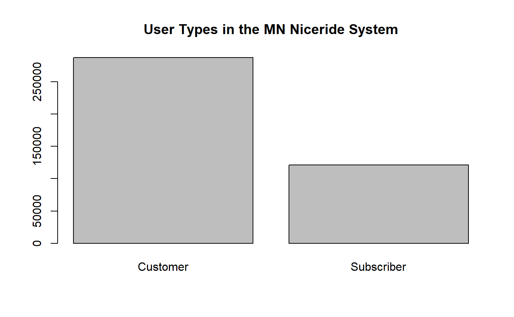

The goal of metcouncilR is to make the data part easier during the Intro to R workshop. Eat your cake first!
You can install the released version of metcouncilR from GitHub with:
#install.packages("devtools")
devtools::install_github("katiejolly/metcouncilR")This is a basic example which shows you how to plot the customer types in a bar plot.
library(metcouncilR)
data("nice_ride_2018")
# make a histogram of trip durations
barplot(table(nice_ride_2018$usertype), main="User Types in the MN Niceride System", xlab="")
summary(nice_ride_2018)
#> tripduration start_datetime
#> Min. : 61 Min. :2018-04-12 08:49:49
#> 1st Qu.: 432 1st Qu.:2018-06-08 15:02:34
#> Median : 800 Median :2018-07-18 08:40:36
#> Mean : 1275 Mean :2018-07-20 03:50:06
#> 3rd Qu.: 1524 3rd Qu.:2018-08-27 20:09:25
#> Max. :17992 Max. :2018-11-17 23:13:49
#>
#> end_datetime start_station_id start_station_name
#> Min. :2018-04-12 09:31:20 Min. : 2.0 Length:409002
#> 1st Qu.:2018-06-08 15:34:45 1st Qu.: 37.0 Class :character
#> Median :2018-07-18 08:54:47 Median : 94.0 Mode :character
#> Mean :2018-07-20 04:11:22 Mean :103.4
#> 3rd Qu.:2018-08-27 20:37:36 3rd Qu.:171.0
#> Max. :2018-11-17 23:19:36 Max. :226.0
#> NA's :13251
#> start_station_latitude start_station_longitude end_station_id
#> Min. :44.89 Min. :-93.33 Min. : 2.0
#> 1st Qu.:44.96 1st Qu.:-93.27 1st Qu.: 38.0
#> Median :44.97 Median :-93.26 Median : 95.0
#> Mean :44.97 Mean :-93.25 Mean :103.6
#> 3rd Qu.:44.98 3rd Qu.:-93.23 3rd Qu.:170.0
#> Max. :45.04 Max. :-93.08 Max. :226.0
#> NA's :13251
#> end_station_name end_station_latitude end_station_longitude
#> Length:409002 Min. :44.89 Min. :-93.35
#> Class :character 1st Qu.:44.96 1st Qu.:-93.27
#> Mode :character Median :44.97 Median :-93.26
#> Mean :44.97 Mean :-93.25
#> 3rd Qu.:44.98 3rd Qu.:-93.23
#> Max. :45.04 Max. :-93.08
#>
#> bikeid usertype birth_year gender
#> Min. : 2 Length:409002 Min. :1911 Min. :0.0000
#> 1st Qu.: 530 Class :character 1st Qu.:1969 1st Qu.:0.0000
#> Median :1056 Mode :character Median :1969 Median :1.0000
#> Mean :1092 Mean :1976 Mean :0.7097
#> 3rd Qu.:1627 3rd Qu.:1986 3rd Qu.:1.0000
#> Max. :3341 Max. :2000 Max. :2.0000
#>
#> bike_type start_month start_day end_month
#> Length:409002 Min. : 4.000 Sun:62998 Min. : 4.000
#> Class :character 1st Qu.: 6.000 Mon:52558 1st Qu.: 6.000
#> Mode :character Median : 7.000 Tue:51657 Median : 7.000
#> Mean : 7.102 Wed:56859 Mean : 7.102
#> 3rd Qu.: 8.000 Thu:57657 3rd Qu.: 8.000
#> Max. :11.000 Fri:60495 Max. :11.000
#> Sat:66778
#> end_day start_hour end_hour
#> Sun:63368 Min. : 0.00 Min. : 0.00
#> Mon:52638 1st Qu.:11.00 1st Qu.:11.00
#> Tue:51585 Median :15.00 Median :15.00
#> Wed:56843 Mean :14.26 Mean :14.46
#> Thu:57670 3rd Qu.:18.00 3rd Qu.:18.00
#> Fri:60193 Max. :23.00 Max. :23.00
#> Sat:66705